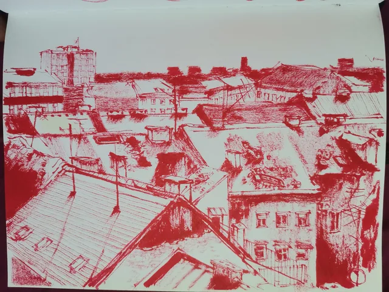
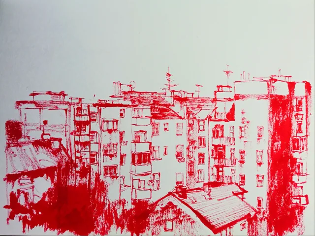
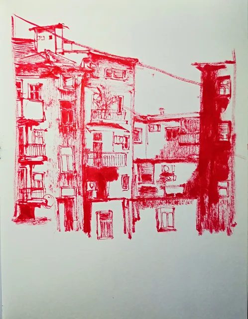
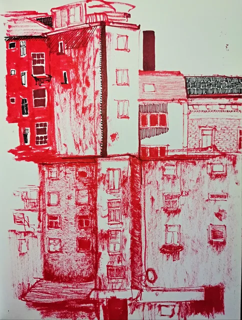
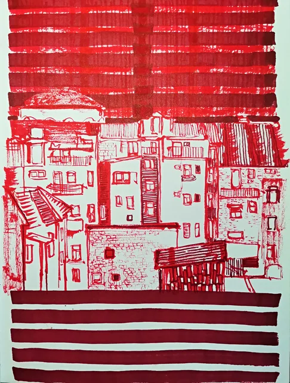
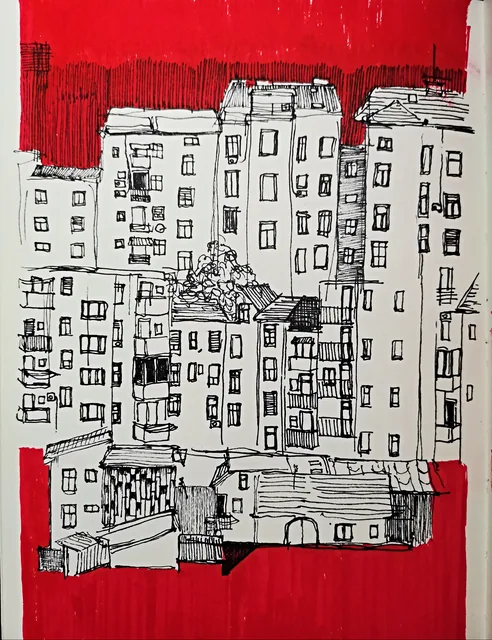
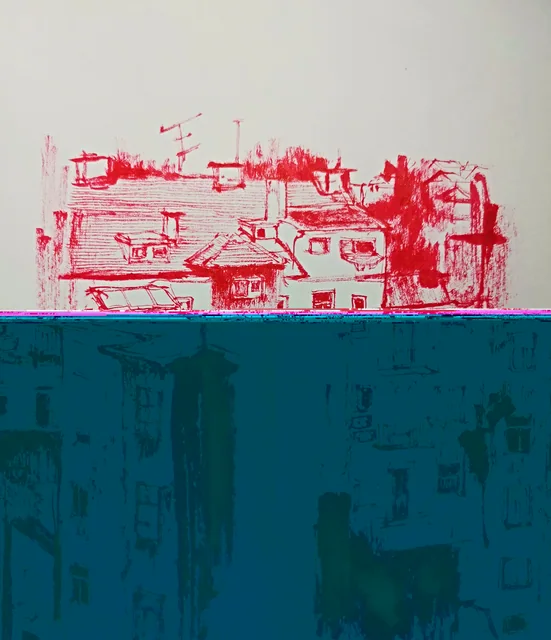

Studies in red / 12 works
CITY
The red city
Facades, rooftops, crossings and windows. Red drawing meets blocks of colour and repeated architectural forms.

Cyclist on a city street012

Street corner with overhead wires010

Facades beneath a red crossing line011

Rooftops above an orange band008

Panorama of red rooftops023

City fragments in red009

Layered apartment blocks014

A cluster of red facades015

Tall building and reflected forms016

City between red stripes017

Black and white facades on red018

Red buildings above a blue field013
Keep looking